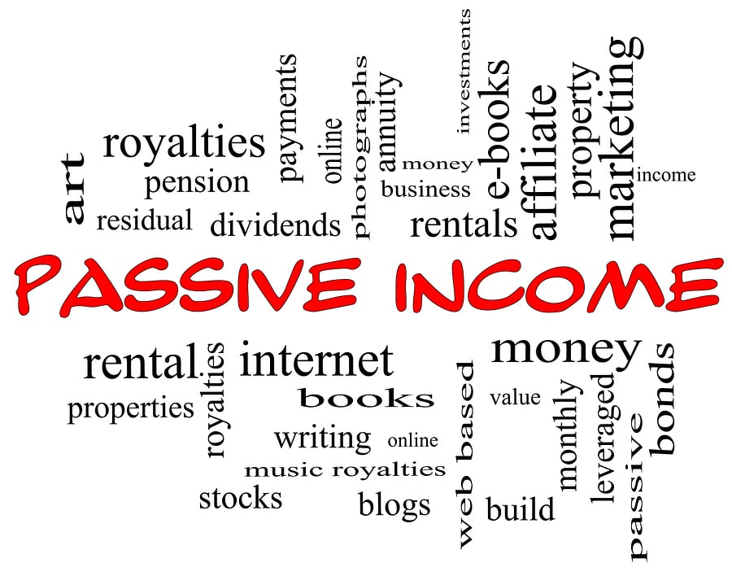

20 Passive Income Ideas for 2020 - TheStreet
 HOW-TO JIM CRAMER INVESTING PERSONAL FINANCE RETIREMENT TECHNOLOGY MARKETS HOW-TO VIDEO FINANCIAL ADVISOR CENTER20 Passive Income Ideas for 2020
Passive income can lead directly to earning cash while you sleep -- if you do it right. Author: Brian O'Connell Publish date: Jan 23, 2020 12:22 PM EST Passive income is somewhat of a Holy Grail for income-minded individuals.
After all, earning money without actively working for it -- once you clear a few hurdles -- is a sweet deal, and a great way to augment your income on a regular basis.
[Jump straight to the passive income ideas.]
What Is Passive Income?
In a word, passive income (sometimes known as residual income ) is cash that you earn after making an upfront financial or sweat equity investment, then you sit back and watch the money roll in. Good examples of passive income include:
An author who receives royalties after writing a book. An entrepreneur who buys a car cleaning shop for an upfront cost, and collects money on the washing, waxing, cleaning, and detailing services charged to clients. An investor who lives on the dividends and profits earned by making smart stock market moves. A real estate investor who fixes up a home and rents it out for a profit every month. The profit the owner receives after his or her initial investment is passive income. Even a cash back credit card qualifies as passive income. You're earning money -- however small -- on cash reward purchases you make with your credit card, and that's enough to be considered passive income.Passive Income Vs. Active Income
Passive income is the opposite of active income, which is money earned when you perform a service or when you work full- or part-time and earn a salary, a per-hour paycheck, or earn commissions (like a salesperson) or tips (like a bartender.)
The key differentiator between passive and active income is this - with the former, you can make money literally while you sleep. With the latter, if you're not working, then you're not earning any active income.
20 Passive Income Ideas
While there are dozens of ways to earn passive income, from building a mobile phone app to owning a vending machine, let's stick to the passive income models at the top of the list of the best money-making opportunities.
How to Make Passive Income from Investing
Investing in stocks and bonds: Buy a stock, bond or a fund and watch your money grow - that's the idea behind the most popular form of passive income. From 1973 to 2016, for example, Standard & Poor's 500 stocks returned 11.7% annually - a solid return on the dollar for stock market investors over that time period. Investing in bonds: Similarly, bonds are an attractive way to engage in passive income. Over a recent 45-year period, bonds funds, as measured by Vanguard Funds , returned 7.1%. Of course, there's no guarantee that investments in stocks or bonds will always work out well, investing in them is by far the surest way to generate money through passive income. Investing in funds and ETFs: Mutual funds and exchange-traded funds bundle different stocks together, usually in the same category (large-cap stocks or auto industry stocks for example.) You pay a fixed price to buy into a fund, based on its current sales price, and can profit via passive income when the fund net asset value (NAV) moves upward. Stock dividends: Some stocks, especially stocks from big corporate standouts, pay dividends to shareholders based on the number of shares they own, and the percentage of the stock price on the dividend date. For example, if a company pays out 3% on a stock that's trading at $100 per share, you'll earn $3 for every share of that stock you own. Add it up and that can be good take-home pay as a passive investment. Investing in coins and collectibles: Buffalo nickels and Spiderman comic books are good examples of coins and collectibles that can rise in value, and thus offer opportunity for passive income investors. You'll need to get up to speed on the value of any coin or collectible under consideration, but once you do so, you're on the way to price appreciation on a commodity you'll be paying a lower price to buy, and will garner a higher price when you sell.How to Make Passive Investing From Online Business
Sell items on eBay: There's money to be earned by selling items you buy at a lower price, and selling them for a higher price on sites like eBay ( EBAY ) - Get Report and Amazon ( AMZN ) - Get Report . Create an online course: So, you like macramé or collecting rare coins? There's a market for specialized expertise, especially if you can create an online course and sell it on an online platform like Udemy. Sell stock photos: There's a big demand for stock photos online (individuals, organizations, and businesses use them when they create content online.) If you're a photographer with a backlog of great photos, sent them to stock photo sites like DepositPhotos, who'll pay a commission for any photos sold. Create a mobile app: Maybe you have a great idea for a mobile app that brings up the best French recipes or the best golf putting tips at the tip of a finger. Hire an app programmer to put it together and sell it on an app store and trigger some passive income. Start an affiliate marketing website: This passive income model works for individuals who already own a bog or website. Here, your business goal is to contact companies and offer to tout their products and services, usually for a fee or a commission, based on the number of page views you get. Studies show that more people spend time online and less watching TV or reading the newspaper. Take advantage of that leverage and earn income from the tens of thousands of companies who want to reach an audience - maybe your audience. Either reach out to companies directly or go through a site like ClickBank, which offers affiliate marketing opportunities.How to Make Passive Income From Home
Design your own T-shirts: People love T-shirts, and they like making a statement wearing them. Take full advantage with a tee design-service that caters to a unique demographic, like pet owners, beer drinkers, or home gardeners. You can earn royalties on good tee designs using online sites like Amazon Merch. Buy a small business: A local small business, like a car wash or a laundromat, is a great way to put money down on a money-making venture. Automate it so you don't have to be on the premises unless you're collecting money. Go into a local business with your eyes wide open - study the books, especially on income and expenses, and examine water and utility bills if your venture will be open 24 hours. Rent out ad space on your vehicle: An emerging market these days, companies will pay you to advertise their products and services on your car, van or truck. Connect with a local or national company on a specialty web site like Wrapify and get your logo on your vehicle. Then, just drive around and collect cash based on your mileage and visibility. Earn cash-back rewards: Make money using your credit card via cash-back rewards, which actually pays you to use your plastic when making purchases. For example, the Chase Sapphire Preferred Card pays you 50,000 points - worth $500, for spending $4,000 in 90 days using the card. Add an approved user to the card and earn even more points and cash. Pay down your debts: Think about it. Money you're not paying credit card companies and lenders is money you stash right into your savings account. By not paying interest to lenders and using the money to have others paying interest to you, you're engaging in perhaps the purest form of passive income - and enriching yourself in the process.More Passive Income Examples
Investing in real estate: Investing in real estate offers more passive income cash potential - but more risk - than investing in stocks or bonds. You'll need substantial amounts of cash to invest in buying a home -- it usually takes 20% down to land a good home mortgage loan . But history shows that home prices usually rise over time, so buying home a for $200,000 and selling it for $250,000 over a five-year time period, for example, is a reasonable expectation when investing in real estate. Investing in rental properties: Another form of real estate investment, rental investments (i.e. becoming a landlord) could steer you down the passive income path of steady monthly rent checks that you can use to pay off a mortgage loan on the rental property. After the mortgage is paid off, those monthly checks go right into your bank account -- potentially for years to come. Investing in a business: Another good way to generate passive income is to invest in a business --even a small one -- in return for a percentage of the profits - just like Shark Tank, only smaller. Lending $10,000 to a local business that, for example, is working on a mobile app for Apple phones could lead to a passive income-generated share of the profits when that mobile app starts selling like hot cakes. Peer-to-Peer Lending: Earn up to 10% in returns by lending individuals, organizations and small companies who don't qualify for traditional financing through peer-to-peer lending platforms like Lending Club ( LC ) - Get Report . You can lend $100, $1,000, or more to borrowers who meet lending platform financial standards. Like a bank, you'll earn interest on the loan - often at higher returns than banks usually get. Creating a Blog or Web Site: Online blogs and websites that have built an audience are a good way to generate passive income, as well. Buy a current blog on a website broker like Flippa and collect income on page views (aim for a blog that at least as 10,000 views per month) or collect on advertising or subscription sales, as well.How the IRS Views Passive Income
Unsurprisingly, the Internal Revenue Service (IRS) takes a keen interest in passive income, especially in its most common form -- on real estate, private business and financial market investments.
According to Uncle Sam, you need to be materially involved in an enterprise to earn active income. With passive income, it's just the opposite, as the IRS deems you to be earning passive income if you're not materially involved with a profit-making enterprise. By and large, expect income to be taxable if you are engaged in a passive income enterprise. You will need to report earnings to the IRS.
There is a taxable upside to passive income. If you lose money, the IRS does allow you to write off passive income as a tax deduction -- which, in a way, is another example of passive income.